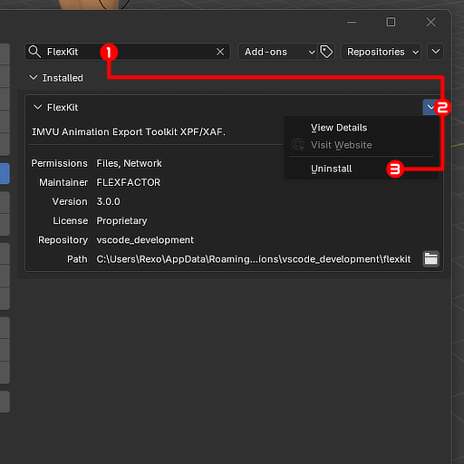

FLEXKIT DOCUMENTATION
Discord
Navigation
-
- Limitations and Known Bugs
- Common Application Errors
- Common Animation Errors
- FAQs(under construction)
Installation and Use
Prerequisite
- Blender 4.2+ (not compatible with older versions) - Download Blender
- IMVU STUDIO TOOLKIT for Blender HIGHLY recommended - Download IMVU Studio Toolkit
- FlexKit has a feature to automatically detect the IMVU STUDIO TOOLKIT animation tool template
Install
FlexKit is designed as an extension (not an add-on). Although not recommended, it's okay if you install it like an add-on instead.
Edit->Preferences->Get ExtensionsArrow at top right->Install From DiskLocate FlexKit(zip file | DO NOT UNZIP) ->click and install-> make sure its enabled after


Uninstall
Edit->Preferences->Get Extensions- Search
FlexKit Arrow at top right of FlexKit sub-panel->Uninstall

Updating FlexKit
- Download updated version of FlexKit
- Uninstall old version
- Install new version
Using FlexKit
- For common use-case scenarios, navigate to Quick-Start
- For details on button layout and what each button does, navigate to
Extra-> Panel Guide - For more understanding of the terminology and what's going on under-the-hood, navigate to
Extra-> Terminology and Technical Details - Although FlexKit has a built-in troubleshooting feature, if you are still running into difficulties you can navigate to
Extra-> Troubleshooting or contact me
Overview
The Problem
- Currently, in order to get animation data from Blender into IMVU creation engines, the user has to use FBX as the import format, usually created by exporting projects with the IMVU STUDIO TOOLKIT for Blender.
- While it is convenient having your mesh, texture, skeleton, and animation assets all in one FBX file format, its common that animations imported this way don't work the way you intend them to. Either it just doesn’t detect the animation at all, the timings don't line up, or fine movements get dropped entirely.
- Not to mention, when you have to make changes or test things iteratively then the frequent importing of FBX feels clunky.
The Solution
- FlexKit is a Blender extension designed to sample armature bones and mesh shape-keys directly from the Blender scene itself.
- The resulting animation data is directly exported into functional XML (XAF/XPF) files specifically for IMVU.
- FlexKit functions best with the IMVU STUDIO TOOLKIT for Blender, but it can function as a "stand-alone" (without the toolkit) plug-in entirely.
Why Its Better
- Near real-time updates of your iterations and changes in both Classic Client and IMVU Studio by exporting directly in the XAF/XPF formats into IMVU project folders
- Users choose the resolution for FlexKit's temporal based sampling function instead of blindly sampling everything and inflating kbs on filesizes, or relying on IMVU's hardcoded parsing.
- FlexKit has various post-processing algorithms to further improve efficiency of the resulting temporally optimized samples. Users have the ability to pick which one gives better filesizes based on their specific animation!
- Ability to selectively sample and include only certain bones/shape-keys. Users can now export animations modularly! This is useful for selectively extracting animations that can be used on their own (e.g. a hand-wave from a dancing animation)
- Easily tackle the usual suspects of weird and wacky behaviour: subtle breathing, fine movements, exact timing, and seamless loops. Whatever skeletal or shape-key based animations you can create in Blender, is exactly what you can expect to see in IMVU.
Note - FlexKit is also under continuous development: optimizations for smoother operation, quality of life implementations to save clicks, and new features entirely. See the Road-Map and Patch Notes for more details.
Contact
About Author | ||||||||
I, FlexFactor, the creator of FlexKit, am a creator on IMVU since 2021; specializing in meshing, texturing, and animating. I am self-taught in all my creative skills and I mostly take online self-paced courses to increase my skillset. My favourite genres to create in are cyberpunk/cybercore, fantasy, and gothic. I aspire to make my own cinematic universe with lore one day, along with video games and shows/animations. | ||||||||
|
Disclaimer
FlexKit Documentation is a resource with recommendations only. Authors are not responsible for any unexpected or erroneous results from you following this guide or by you using any hardware, software, or device.